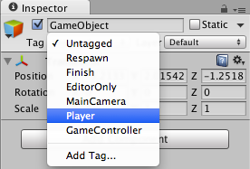

Tags
A Tag is a reference word which you can assign to one or more GameObjects. For example, you might define "Player" Tags for player-controlled characters and an "Enemy" Tag for non-player-controlled characters. You might define items the player can collect in a Scene with a "Collectable" Tag.
Tags help you identify GameObjects for scripting purposes. They ensure you don't need to manually add GameObjects to a script's exposed properties using drag and drop, thereby saving time when you are using the same script code in multiple GameObjects.
Tags are useful for triggers in Collider control scripts; they need to work out whether the player is interacting with an enemy, a prop, or a collectable, for example.
You can use the GameObject.FindWithTag() function to find a GameObject by setting it to look for any object that contains the Tag you want. The following example uses GameObject.FindWithTag(). It instantiates respawnPrefab at the location of GameObjects with the Tag "Respawn":
JavaScript:
var respawnPrefab : GameObject;
var respawn = GameObject.FindWithTag ("Respawn");
Instantiate (respawnPrefab, respawn.position, respawn.rotation);
C#:
using UnityEngine;
using System.Collections;
public class Example : MonoBehaviour {
public GameObject respawnPrefab;
public GameObject respawn;
void Start() {
if (respawn == null)
respawn = GameObject.FindWithTag("Respawn");
Instantiate(respawnPrefab, respawn.transform.position, respawn.transform.rotation) as GameObject;
}
}
Creating new Tags
The Inspector shows the Tag and Layer drop-down menus just below any GameObject's name.

To create a new Tag, select Add Tag.... This opens the Tag and Layer Manager in the Inspector. Note that once you name a Tag, it cannot be renamed later.
Layers are similar to Tags, but are used to define how Unity should render GameObjects in the Scene. See documentation on the Layers page for more information.
Applying a Tag
The Inspector shows the Tag and Layer drop-down menus just below any GameObject's name. To apply an existing Tag to a GameObject, open the Tags dropdown and choose the Tag you want to apply. The GameObject is now associated with this Tag.
Hints
A GameObject can only have one Tag assigned to it.
Unity includes some built-in Tags which do not appear in the Tag Manager:
- Untagged
- Respawn
- Finish
- EditorOnly
- MainCamera
- Player
- GameController
You can use any word you like as a Tag. You can even use short phrases, but you may need to widen the Inspector to see the Tag's full name.